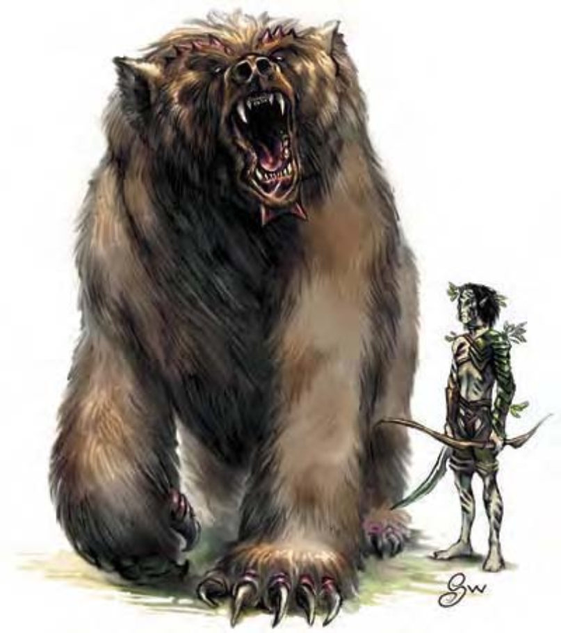

| 资料栏位 | 凶暴熊 (Dire Bear) 大型动物 |
| 生命骰 | 12d8+51 (105HP) |
| 先攻 | +1 |
| 速度 | 40英尺 (8格) |
| 防御等级 | 17 (-1体型、+1敏捷、+7天生)、接触10、措手不及16 |
| 基本攻击/擒抱 | +9 / +23 |
| 攻击 | 爪抓+19近战 (2d4+10) |
| 全力攻击 | 2爪抓+19近战 (2d4+10) 及 啮咬+13近战 (2d8+5) |
| 占据/触及 | 10英尺 / 5英尺 |
| 特殊攻击 | 精通擒抱 |
| 特殊能力 | 昏暗视觉、灵敏嗅觉 |
| 豁免 | 强韧+12、反射+9、意志+9 |
| 属性 | 力量31、敏捷13、体质19、智力2、感知12、魅力10 |
| 技能 | 聆听+10、侦察+10、游泳+13 |
| 专长 | 警觉、坚韧、健跑、健壮、专攻武器 (爪抓) |
| 环境 | 寒冷带森林 |
| 组织 | 单独或成双 |
| 挑战级数 | 7 |
| 宝藏 | 无 |
| 阵营 | 总是绝对中立 |
| 进化 | 13-16HD (大型)；17-36HD (超大型) |
| 等级修正值 | ― |
笨重的熊，棕色背脊可见隆起的椎骨，爪子似镰刀一般。冷冷的锐利眼神中透出野性与毁灭。
杂食性的凶暴熊通常不花费力气在逃走的生物上，但会积极保护到手的猎物与食物。他们毫不迟疑地撕开任何可能藏有食物的容器。
一般凶暴熊约12英尺长，800磅重。
战斗凶暴熊以爪抓攻击撕裂对手。
精通擒抱（特异）：如果凶暴熊利用爪抓击中对手，即可利用即时动作进行擒抱攻击，且不会引发对方借机攻击。